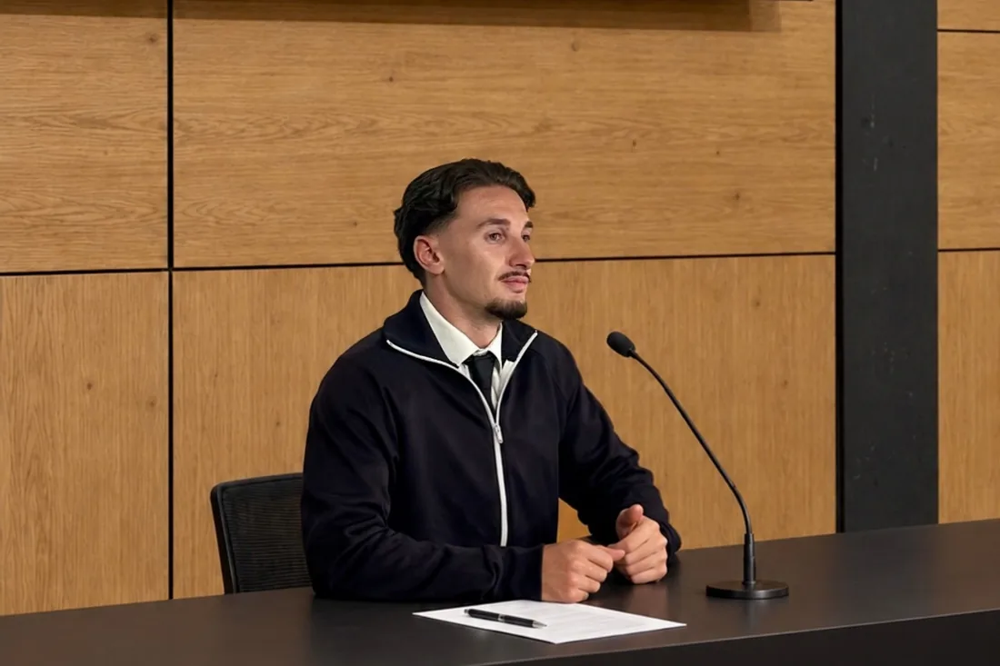

Benjamin Bridanne
Chargé de communication digitale
Après un stage à la Coopérative ÉcoHabitat, terminé le 30 septembre 2026, je poursuis mon activité en freelance pour consolider mes compétences et travailler sur de nouveaux projets.
Je recherche actuellement un CDI ou un CDD dans le domaine de la communication digitale.
